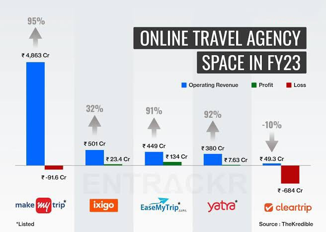

First Flight
Early Insights into MVP stage

EIC MBM
Published on November 29, 2024

"Great things are not done by impulse, but by a series of small things brought together." –Vincent Van Gogh
Every startup begins with a spark: a vision to solve a problem or bring something new to the world. But turning that idea into a sustainable thriving business is a journey marked by challenges at every stage. It’s not just about the concept; it’s about execution, adaptation and perseverance. The startup journey isn’t linear—it’s messy, unpredictable and often counterintuitive. But it’s also deeply rewarding. Startups that succeed do so not because they avoid challenges but because they embrace them, learn from them and emerge stronger.
Building the MVP: Starting Small
The MVP (Minimum Viable Product) stage is one of the most critical milestones in a startup's journey. It’s where your vision takes its first tangible form and meets the real world. However, it’s also widely misunderstood. Contrary to popular belief, an MVP isn’t about launching a complete or polished product; it’s about creating the simplest version of your solution that effectively addresses a specific problem for your target audience.
This stage requires careful planning and prioritization. The goal is to test your core hypothesis with minimal resources while gathering valuable user feedback. It’s about stripping your idea to its essentials—enough to prove that it works and has potential, but not so elaborate that you waste time and money on features that might be unnecessary.
Case Study: BookMyShow
Take BookMyShow as an example which started as a movie ticket platform in 2007 and has sold over 500 million tickets by 2023. It began with a simple MVP focused on online ticketing.
When it launched, it didn’t have all the bells and whistles we see today. The founders identified a clear problem: people struggled with booking movie tickets in a convenient, hassle-free way. They built a basic online platform that allowed users to browse movie schedules and book tickets digitally. At the time, it wasn’t about adding flashy features or tackling multiple verticals like event booking, live performances, or payment integrations. Instead, the team focused entirely on making the movie ticket booking process as seamless as possible.
This focused approach paid off. Once BookMyShow established itself as the go-to platform for moviegoers, the team started expanding its offerings based on user demand. Today, it’s not just about movies; you can book tickets for concerts, theater performances, and even sporting events. But all of that came later, only after the MVP proved its value.
Problems Faced at the MVP Stage of a Startup:
1. Identifying the Core Problem to Solve
- Problem: Startups often struggle to clearly define the problem they’re solving. Without a well-defined problem, the MVP may not resonate with the audience.
- Example: Zomato initially launched as a restaurant listing platform. After feedback, they pivoted to include food delivery, addressing a more urgent market need.
2. Balancing Functionality vs. Simplicity
- Problem: Deciding how much functionality to include can be tricky. Too many features can overwhelm the user while too few might make the product seem incomplete.
- Example: Airbnb started with a basic MVP—just a platform for booking rooms. It wasn’t perfect but enough to test the peer-to-peer accommodation concept.
3. Building a Scalable Solution
- Problem: The MVP may not be scalable. As user demand grows, the product may struggle to keep up, leading to technical challenges.
- Example: Twitter faced scalability issues early on. Their MVP wasn’t initially designed to handle rapid user growth, requiring frequent technical adjustments.
Conclusion Data:
- Startups Fail but Many Pivot Successfully:
42% of startups fail due to a lack of market need. However, 70% of successful startups pivot their business models at least once (Harvard Business Review).
- Time to Product-Market Fit:
Startups typically take 1.5 to 2 years to achieve product-market fit through feedback and iterations (First Round Capital).
- Startup Survival Rates:
Only 10% of startups scale successfully after the MVP stage.
- Feedback and Iteration:
42% of entrepreneurs say iterating on their MVP based on user feedback is key to startup success.
Remember, the MVP is just the first step in a long journey. While it’s important to test your core idea with a simple product, don’t get too attached to perfection at this stage. The road ahead will be filled with twists and turns but each challenge is an opportunity to learn and improve. Whether you’re refining your product, understanding your audience better or adjusting your business model every iteration brings you closer to building something meaningful. The key is to stay focused, be adaptable and keep pushing forward—because real growth happens when you embrace the process, not just the destination.